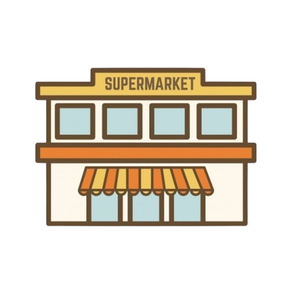
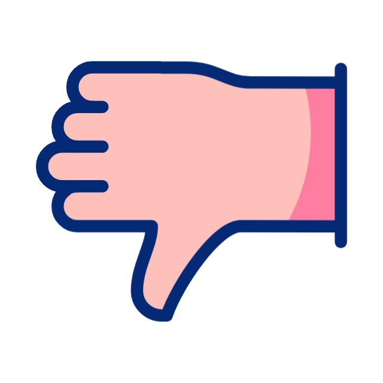

Noun; A specific group of potential customers or the space where goods are traded. Example: he company is trying to break into the European market with its new product.
Verb; To publicize or advertise a product, service, or brand to increase sales or public awareness. Example: We need to promote our new summer collection on social media next week.
Adjective; Something that is attractive, interesting, and holds the customer's attention. Example: Creating engaging video content is the best way to get more followers.
Adverb; Marketing results achieved naturally through high-quality content without using paid advertising. Example: Our website traffic grew organically after we improved our SEO strategy.

Preposition; Lower than or underneath; in marketing, it refers to direct, untargeted, or niche promotional tactics. Example: Direct email campaigns fall below the standard mass-media advertising category.
Noun; .A person or business that has shown interest in a company's products or services and has provided their contact information. Example: The new online registration form generated over five hundred leads in its first week.
Adjective; Content that spreads rapidly and widely from one internet user to another through social media and online platforms. Example: Their short video campaign went viral, gaining millions of views in just twenty-four hours.
Verb; To introduce or start a new product, service, or advertising campaign in the market. Example: he marketing team plans to launch the summer advertising campaign next Monday.